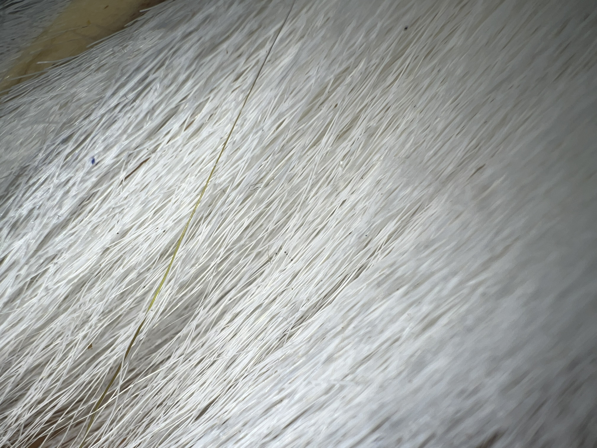
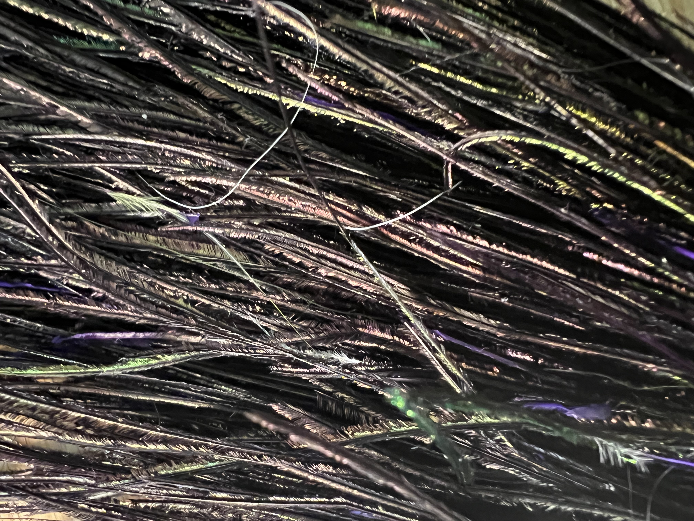
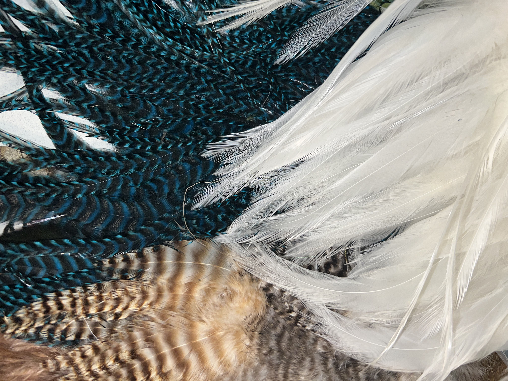
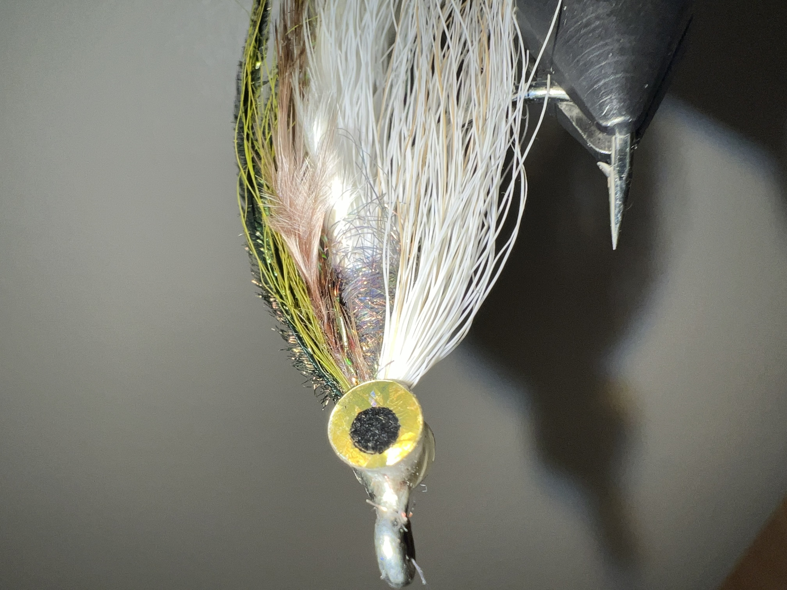

Tomlikestofish.com is a place for northeast fisherman to learn, and connect with members of our community. Our ecosystems are in trouble, and nobody knows this more than our fellow outdoorsmen. So take a look around the site. Hopefully, you will learn a bit about our native fish, find ways to become involved, or even purchase some flies that will help elevate your fishing game.